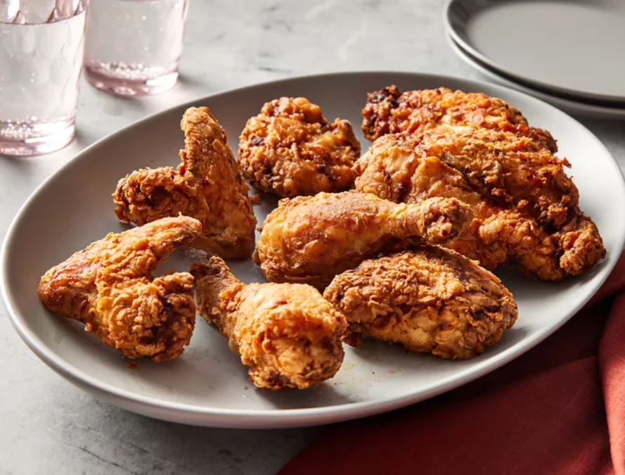

Chef John's Buttermilk Fried Chicken

Descripton:
Buttermilk fried chicken that's incredibly tender, thanks to tangy buttermilk. After the buttermilk soak, dredge the chicken pieces in seasoned flour and fry them in hot oil until crisp and golden.
This buttermilk fried chicken recipe results in chicken that’s wonderfully crispy on the outside, but tender and juicy on the inside.
Ingredients:
For the chicken:
- Whole chicken (cut into eight pieces)
- seasonings (black pepper, salt, paprika, white pepper, dried rosemary, ground thyme, dried oregano, dried sage, and cayenne pepper)
- buttermilk
For the seasoned flour:
- all-purpose flour
- salt
- paprika
- cayenne pepper
- garlic powder
- white pepper
- onion powder
Misc.:
Steps:
- Toss the chicken pieces in seasonings, then marinate in buttermilk overnight.
- Make the seasoned flour.
- Dredge each buttermilk-soaked chicken piece in flour and transfer to a plate.
- Fry the chicken until an instant read thermometer reads 165 degrees F.
- Drain on a cooling rack over a paper towel-lined baking sheet.